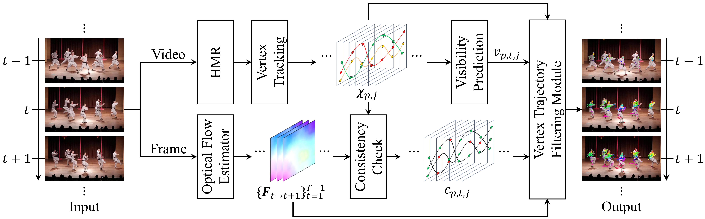

CVPR 2026
AnthroTAP is an automated pseudo-labeling pipeline that distills the rich supervision signal in human motion videos into 2D point tracking data. By fitting SMPL models to detected people, projecting 3D mesh vertices onto the image plane, and resolving occlusions via ray-casting, it generates trajectories with accurate occlusion labels, entirely without manual annotation.

AnthroTAP pipeline: human mesh recovery and vertex projection form the core pseudo-labeling process, with ray-casting for occlusion modeling.TokenHMR fits SMPL 3D body meshes to every person detected in each frame, producing a temporally consistent 3D mesh with Nv vertices per person.
3D mesh vertices are projected onto the 2D image plane using known camera parameters, forming initial pseudo-trajectories 𝒳p,j across frames.
A ray cast from the camera toward each 3D vertex is tested against all human mesh triangles. Points blocked before reaching the target are marked as occluded, resolving both self-occlusion and inter-person occlusion.
HMR-predicted displacements are compared against optical flow at each frame. Trajectory segments where the two diverge are discarded before training, catching occlusions from scene elements (e.g., furniture, background objects) outside the scope of the SMPL model.
We apply AnthroTAP to 1.4K videos from the Let's Dance dataset, spanning diverse dance styles from solo performances to complex multi-person scenes. Unlike competing approaches, our training data is entirely non-proprietary.
We measure complexity as the mean angular acceleration of trajectories, measuring how sharply and frequently a trajectory changes direction over all contiguous visible segments. Anthro-LD achieves the highest complexity by a large margin, surpassing even synthetic datasets specifically designed for diversity.
Trajectory complexity (mean angular acceleration ↑). Anthro-LD is 3× more complex than the next real-world dataset (DriveTrack).
Compared to CoTracker3 and BootsTAPIR, Anthro-LocoTrack consistently demonstrates stronger tracking on highly deformable objects and severe occlusions.
| CoTracker3 | BootsTAPIR | Anthro-LocoTrack (Ours) |
Both LocoTrack and TAPNext trained with our approach show significant improvements across all metrics and datasets. We use 11× fewer videos than CoTracker3 and 1,000× fewer training frames than BootsTAPIR.
| Method | Training Dataset | DAVIS First | DAVIS Strided | Kinetics First | RoboTAP First | ||||||||
|---|---|---|---|---|---|---|---|---|---|---|---|---|---|
| AJ↑ | <δxavg↑ | OA↑ | AJ↑ | <δxavg↑ | OA↑ | AJ↑ | <δxavg↑ | OA↑ | AJ↑ | <δxavg↑ | OA↑ | ||
| Models evaluated at 256×256 resolution | |||||||||||||
| OmniMotion | - | - | - | - | 51.7 | 67.5 | 85.3 | - | - | - | - | - | - |
| Dino-Tracker | - | - | - | - | 62.3 | 78.2 | 87.5 | - | - | - | - | - | - |
| TAPNet | Kub | 33.0 | 48.6 | 78.8 | 38.4 | 53.1 | 82.3 | 38.5 | 54.4 | 80.6 | - | - | - |
| TAPIR | Kub | 58.5 | 70.0 | 86.5 | 61.3 | 73.6 | 88.8 | 49.6 | 64.2 | 85.0 | 59.6 | 73.4 | 87.0 |
| Online TAPIR | Kub | 56.2 | 70.0 | 86.5 | - | - | - | 51.5 | - | - | - | - | - |
| TAPTR | Kub | 63.0 | 76.1 | 91.1 | 66.3 | 79.2 | 91.0 | 49.0 | 64.4 | 85.2 | 60.1 | 75.3 | 86.9 |
| TAPTRv2 | Kub | 63.5 | 75.9 | 91.4 | 66.4 | 78.8 | 91.3 | 49.7 | 64.2 | 85.7 | - | - | - |
| TAPTRv3 | Kub | 63.2 | 76.7 | 91.0 | - | - | - | 54.5 | 67.5 | 88.2 | - | - | - |
| BootsTAPIR | Kub+15M | 61.4 | 74.0 | 88.4 | 66.2 | 78.5 | 90.7 | 54.6 | 68.4 | 86.5 | 64.9 | 80.1 | 86.3 |
| LocoTrack | Kub | 63.0 | 75.3 | 87.2 | 67.8 | 79.6 | 89.9 | 52.9 | 66.8 | 85.3 | 62.3 | 76.2 | 87.1 |
| Anthro-LocoTrack (Ours) | Kub+1.4K | 64.8 | 77.3 | 89.1 | 69.0 | 81.0 | 90.8 | 53.9 | 68.4 | 86.4 | 64.7 | 79.2 | 88.4 |
| Improvement over baseline | +1.8 | +2.0 | +1.9 | +1.2 | +1.4 | +0.9 | +1.0 | +1.6 | +1.1 | +2.4 | +3.0 | +1.3 | |
| TAPNext | Kub | 62.4 | 76.6 | 90.5 | 65.4 | 79.7 | 88.9 | - | - | - | 59.8 | 73.1 | 88.1 |
| BootsTAPNext | Kub+15M | 65.2 | 78.5 | 91.2 | 68.9 | 82.4 | 91.6 | - | - | - | 64.1 | 75.1 | 88.8 |
| Anthro-TAPNext (Ours) | Kub+1.4K | 66.1 | 79.3 | 91.7 | 71.4 | 83.5 | 92.4 | - | - | - | 63.4 | 76.3 | 90.2 |
| Improvement over baseline | +3.7 | +2.7 | +1.2 | +6.0 | +3.8 | +3.5 | - | - | - | +3.6 | +3.2 | +2.1 | |
| Models evaluated at 384×512 resolution | |||||||||||||
| PIPs | FT | 42.2 | 64.8 | 77.7 | 52.4 | 70.0 | 83.6 | - | - | - | - | - | - |
| CoTracker2 | Kub | 62.2 | 75.7 | 89.3 | 65.9 | 79.4 | 89.9 | 48.8 | 64.5 | 85.8 | - | - | - |
| Track-On | Kub | 65.0 | 78.0 | 90.8 | - | - | - | 53.9 | 67.3 | 87.8 | - | - | - |
| CoTracker3 (online) | Kub64+15K | 64.4 | 76.9 | 91.2 | - | - | - | 54.7 | 67.8 | 87.4 | - | - | - |
| CoTracker3 (offline) | Kub64+15K | 63.8 | 76.3 | 90.2 | - | - | - | 55.8 | 68.5 | 88.3 | - | - | - |
| LocoTrack | Kub | 64.8 | 77.4 | 86.2 | 69.4 | 81.3 | 88.6 | 52.3 | 66.4 | 82.1 | - | - | - |
| Anthro-LocoTrack (Ours) | Kub+1.4K | 65.9 | 78.9 | 87.3 | 71.1 | 82.9 | 90.3 | 54.8 | 68.6 | 85.3 | - | - | - |
| Improvement over baseline | +1.1 | +1.5 | +1.1 | +1.7 | +1.6 | +1.7 | +2.5 | +2.2 | +3.2 | - | - | - | |
Point tracking models often struggle to generalize to real-world videos because large-scale training data is predominantly synthetic, the only source currently feasible to produce at scale. Collecting real-world annotations, however, is prohibitively expensive, as it requires tracking hundreds of points across frames.
We introduce AnthroTAP, an automated pipeline that generates large-scale pseudo-labeled point tracking data from real human motion videos. Leveraging the structured complexity of human movement, including non-rigid deformations, articulated motion, and frequent occlusions. AnthroTAP fits Skinned Multi-Person Linear (SMPL) models to detected humans, projects mesh vertices onto image planes, resolves occlusions via ray-casting, and filters unreliable tracks using optical flow consistency.
A model trained on the AnthroTAP dataset achieves state-of-the-art performance on TAP-Vid, a challenging general-domain benchmark for tracking any point on diverse rigid and non-rigid objects (e.g., humans, animals, robots, and vehicles). Our approach outperforms recent self-training methods trained on vastly larger real datasets, while requiring only one day of training on 4 GPUs.
AnthroTAP shows that structured human motion offers a scalable and effective source of real-world supervision for point tracking.
@inproceedings{kim2026anthrotap,
title = {AnthroTAP: Learning Point Tracking with Real-World Motion},
author = {Kim, In{\`e}s Hyeonsu and Cho, Seokju and Koo, Jahyeok and Park, Junghyun and Huang, Jiahui and Lee, Honglak and Lee, Joon-Young and Kim, Seungryong},
booktitle = {Proceedings of the IEEE/CVF Conference on Computer Vision and Pattern Recognition (CVPR)},
year = {2026}
}